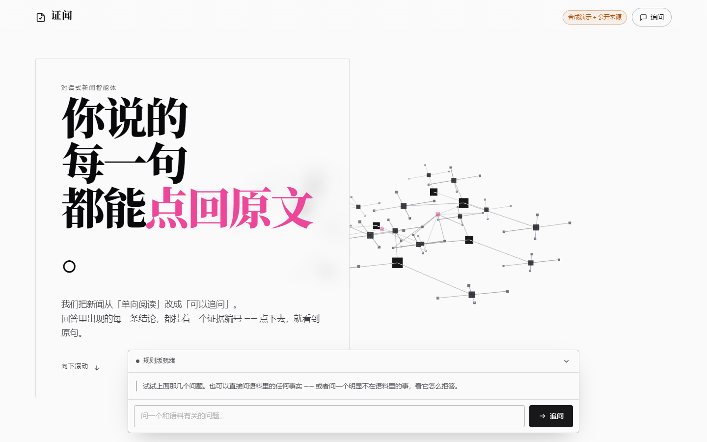
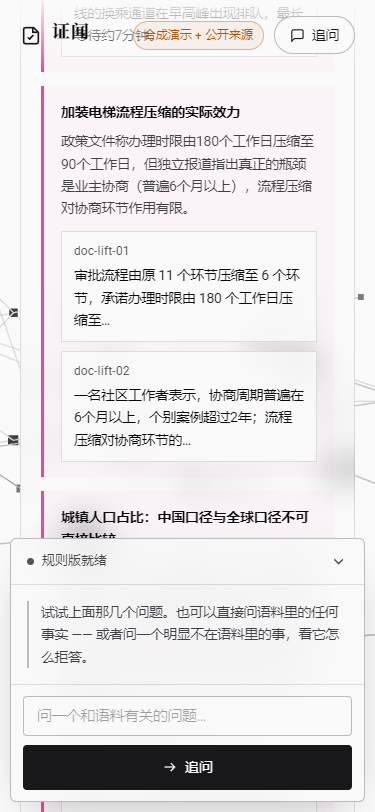

与真实系统的差异（如实说明）： 本页是快照，不能实时提问；真实系统为可运行服务（Python 标准库实现，零第三方依赖），
支持实时检索、拒答判定、多源分歧提示与决策轨迹。静态页用于「线上环境不可达」时仍能看到系统行为与证据链。
一、运行状态（快照时刻）
项 值 服务 证闻 · 对话式新闻智能体 语料 自建合成新闻语料 ＋ 世界银行开放数据（WDI）真实指标（mixed） 语料徽章 合成演示 + 公开来源 规模 7 主题 / 32 来源 / 148 条证据 / 4 组分歧 生成路径 未配置模型凭据 → 规则版（界面如实标注，不冒充 AI 生成） 拒答阈值 0.34 依据闸门 查询原始词命中 ≥ 2 个（同义扩展词不计入依据判定）
二、语料来源与许可（逐源标注）
编号 来源 许可 条款 S0 自建合成新闻语料 原创，归本项目所有（参赛团队） — WB 世界银行开放数据（WDI）真实指标 CC BY 4.0 https://data.worldbank.org/summary-terms-of-use
合成语料为演示主力（边界场景可控）；世界银行数据为真实数值补充（CC BY 4.0，允许商用，义务为署名 + 不暗示背书 + 不使用其名称与标识）。两类内容在界面与证据中始终分开标注。
三、问答快照（三类结果各取样）
5号线开通后客流多少？ 规则版 置信度 0.4641 / 阈值 0.34
以下内容全部来自检索到的原文片段，未做改写：
1. 5号线一期开通首周，线路日均客流约21.3万人次，与官方公布数据一致；但乘客反馈集中在换乘接驳环节。［ev-metro-02-p1］
2. 市交通研究院预测，5号线一期开通后，早高峰主干道平均车速可提升约12%，城东产业园通勤时间平均缩短约18分钟。［ev-metro-01-p2］
3. 开通首周日均客流约21.3万人次，低于可研报告预期的26万人次，运营方表示客流培育期通常为6至12个月。［ev-metro-01-p3］
4. 多位受访乘客表示，5号线与既有2号线的换乘通道在早高峰出现排队，最长等待约7分钟。［ev-metro-02-p3］
需要提请注意：本问题涉及多来源表述差异，详见「分歧」区块。 降级说明：未配置模型凭据 → 使用规则版
证据（每条都能点回原文） ev-metro-02-p1 5号线一期开通首周，线路日均客流约21.3万人次，与官方公布数据一致；但乘客反馈集中在换乘接驳环节。— 5号线开通首周：换乘接驳仍是主要痛点｜城市观察周刊（合成）｜许可：原创，归本项目所有（参赛团队） ev-metro-01-p2 市交通研究院预测，5号线一期开通后，早高峰主干道平均车速可提升约12%，城东产业园通勤时间平均缩短约18分钟。— 滨江市轨道交通5号线一期开通试运营｜滨江日报（合成）｜许可：原创，归本项目所有（参赛团队） ev-metro-01-p3 开通首周日均客流约21.3万人次，低于可研报告预期的26万人次，运营方表示客流培育期通常为6至12个月。— 滨江市轨道交通5号线一期开通试运营｜滨江日报（合成）｜许可：原创，归本项目所有（参赛团队） ev-metro-02-p3 多位受访乘客表示，5号线与既有2号线的换乘通道在早高峰出现排队，最长等待约7分钟。— 5号线开通首周：换乘接驳仍是主要痛点｜城市观察周刊（合成）｜许可：原创，归本项目所有（参赛团队） 多源差异（不替你合并成单一结论） 5号线一期客流预期口径 5号线开通成效评价 决策轨迹（7 步 · 全过程留痕） 查询理解 归一化出 7 个检索词：号线 / 线开 / 开通 / 通后 / 后客 / 客流 / 流多 语料范围检查 5/7 个检索词存在于语料词表 语义检索 倒排索引命中 12 条候选证据（5/5 个有效检索词得到匹配） 区分度检查 仅命中 1 个高区分度实词（要求 ≥2，IDF 阈值 P70 = 4.60） → 置信度按 0.6 折算 依据充分性闸门 查询原始词命中 5 个（≥2）→ 通过：号线 / 线开 / 开通 / 通后 / 客流 拒答闸门 置信度 0.46 ≥ 阈值 0.34 → 放行 多源一致性比对 检出 2 组多源分歧 加装电梯业主需要出多少钱？ 规则版 置信度 0.8614 / 阈值 0.34
以下内容全部来自检索到的原文片段，未做改写：
1. 扣除20万元补贴后，单部电梯业主自筹部分仍需25万至40万元；按楼层系数分摊，六层住户单户负担约4万至8万元。［ev-lift-02-p3］
2. 财政补贴标准为每部电梯不超过20万元，补贴资金由市、区两级按6:4分担；单部电梯建安成本通常在45万至60万元区间。［ev-lift-01-p2］
3. 细则发布一个月后，记者走访6个老旧小区，其中4个小区仍卡在业主协商阶段。［ev-lift-02-p1］
4. 业主同意比例执行现行规定：本单元专有部分面积占比三分之二以上且占总户数三分之二以上业主同意，并妥善处理相邻关系。［ev-lift-01-p3］ 降级说明：未配置模型凭据 → 使用规则版
证据（每条都能点回原文） ev-lift-02-p3 扣除20万元补贴后，单部电梯业主自筹部分仍需25万至40万元；按楼层系数分摊，六层住户单户负担约4万至8万元。— 加装电梯落地难：钱从哪来，低层为什么不同意｜城市观察周刊（合成）｜许可：原创，归本项目所有（参赛团队） ev-lift-01-p2 财政补贴标准为每部电梯不超过20万元，补贴资金由市、区两级按6:4分担；单部电梯建安成本通常在45万至60万元区间。— 老旧小区加装电梯实施细则发布｜市住房与建设局（合成）｜许可：原创，归本项目所有（参赛团队） ev-lift-02-p1 细则发布一个月后，记者走访6个老旧小区，其中4个小区仍卡在业主协商阶段。— 加装电梯落地难：钱从哪来，低层为什么不同意｜城市观察周刊（合成）｜许可：原创，归本项目所有（参赛团队） ev-lift-01-p3 业主同意比例执行现行规定：本单元专有部分面积占比三分之二以上且占总户数三分之二以上业主同意，并妥善处理相邻关系。— 老旧小区加装电梯实施细则发布｜市住房与建设局（合成）｜许可：原创，归本项目所有（参赛团队） 决策轨迹（8 步 · 全过程留痕） 查询理解 归一化出 10 个检索词：加装 / 装电 / 电梯 / 梯业 / 业主 / 主需 / 需要 / 要出 / 出多 / 少钱 同义扩展 补充 4 个书面表达检索词：万元 / 补贴 / 成本 / 票价 语料范围检查 9/14 个检索词存在于语料词表 语义检索 倒排索引命中 10 条候选证据（9/9 个有效检索词得到匹配） 区分度检查 命中 3 个高区分度实词（≥2）→ 通过 依据充分性闸门 查询原始词命中 5 个（≥2）→ 通过：加装 / 装电 / 电梯 / 梯业 / 业主 拒答闸门 置信度 0.86 ≥ 阈值 0.34 → 放行 多源一致性比对 未检出多源分歧 社区图书馆延时开放效果如何？ 规则版 置信度 0.5201 / 阈值 0.34
以下内容全部来自检索到的原文片段，未做改写：
1. 自6月起，全市12家社区图书馆开展延长开放时间试点，工作日闭馆时间由18:00延后至21:00，周末开放时间提前至9:00。［ev-library-01-p1］
2. 试点周期为6个月，延时时段的到馆人次、借阅量与满意度将作为是否全市推广的依据。［ev-library-01-p2］
3. 市文化旅游局安排的试点专项经费为每馆每月1.2万元，主要用于延时人力与水电支出。［ev-library-01-p3］
4. 延时开放满月，12家试点馆晚间18:00至21:00时段合计到馆人次约1.1万，占全时段到馆人次的9.3%。［ev-library-02-p1］ 降级说明：未配置模型凭据 → 使用规则版
证据（每条都能点回原文） ev-library-01-p1 自6月起，全市12家社区图书馆开展延长开放时间试点，工作日闭馆时间由18:00延后至21:00，周末开放时间提前至9:00。— 社区图书馆延长开放时间试点方案｜市文化旅游局（合成）｜许可：原创，归本项目所有（参赛团队） ev-library-01-p2 试点周期为6个月，延时时段的到馆人次、借阅量与满意度将作为是否全市推广的依据。— 社区图书馆延长开放时间试点方案｜市文化旅游局（合成）｜许可：原创，归本项目所有（参赛团队） ev-library-01-p3 市文化旅游局安排的试点专项经费为每馆每月1.2万元，主要用于延时人力与水电支出。— 社区图书馆延长开放时间试点方案｜市文化旅游局（合成）｜许可：原创，归本项目所有（参赛团队） ev-library-02-p1 延时开放满月，12家试点馆晚间18:00至21:00时段合计到馆人次约1.1万，占全时段到馆人次的9.3%。— 延时开放满月：晚间到馆人次低于预期｜滨江日报（合成）｜许可：原创，归本项目所有（参赛团队） 决策轨迹（8 步 · 全过程留痕） 查询理解 归一化出 11 个检索词：社区 / 区图 / 图书 / 书馆 / 馆延 / 延时 / 时开 / 开放 / 放效 / 效果 / 果如 同义扩展 补充 2 个书面表达检索词：试点 / 占 语料范围检查 9/13 个检索词存在于语料词表 语义检索 倒排索引命中 127 条候选证据（9/9 个有效检索词得到匹配） 区分度检查 仅命中 0 个高区分度实词（要求 ≥2，IDF 阈值 P70 = 4.60） → 置信度按 0.6 折算 依据充分性闸门 查询原始词命中 8 个（≥2）→ 通过：社区 / 区图 / 图书 / 书馆 / 馆延 / 延时 / 时开 / 开放 拒答闸门 置信度 0.52 ≥ 阈值 0.34 → 放行 多源一致性比对 未检出多源分歧 5号线客流预测口径有没有矛盾？ 规则版 置信度 0.4985 / 阈值 0.34
以下内容全部来自检索到的原文片段，未做改写：
1. 预测结果以区间形式给出，5号线一期开通首年日均客流预测区间为22万至26万人次，中值24万人次。［ev-metro-03-p2］
2. 新线客流预测采用四阶段法，包含出行生成、出行分布、方式划分与客流分配四个步骤，基准年为开通前一年。［ev-metro-03-p1］
3. 可研报告披露的26万人次为预测区间上限，非中值；对外表述中若仅引用上限，会造成预期偏高的印象。［ev-metro-03-p3］
4. 车速提升预测基于路网容量模型，假设机动车保有量年增长不超过3%，该假设需在年度复核中更新。［ev-metro-03-p4］
需要提请注意：本问题涉及多来源表述差异，详见「分歧」区块。 降级说明：未配置模型凭据 → 使用规则版
证据（每条都能点回原文） ev-metro-03-p2 预测结果以区间形式给出，5号线一期开通首年日均客流预测区间为22万至26万人次，中值24万人次。— 轨道交通新线客流预测方法说明｜市交通研究院技术说明（合成）｜许可：原创，归本项目所有（参赛团队） ev-metro-03-p1 新线客流预测采用四阶段法，包含出行生成、出行分布、方式划分与客流分配四个步骤，基准年为开通前一年。— 轨道交通新线客流预测方法说明｜市交通研究院技术说明（合成）｜许可：原创，归本项目所有（参赛团队） ev-metro-03-p3 可研报告披露的26万人次为预测区间上限，非中值；对外表述中若仅引用上限，会造成预期偏高的印象。— 轨道交通新线客流预测方法说明｜市交通研究院技术说明（合成）｜许可：原创，归本项目所有（参赛团队） ev-metro-03-p4 车速提升预测基于路网容量模型，假设机动车保有量年增长不超过3%，该假设需在年度复核中更新。— 轨道交通新线客流预测方法说明｜市交通研究院技术说明（合成）｜许可：原创，归本项目所有（参赛团队） 多源差异（不替你合并成单一结论） 5号线一期客流预期口径 决策轨迹（7 步 · 全过程留痕） 查询理解 归一化出 12 个检索词：号线 / 线客 / 客流 / 流预 / 预测 / 测口 / 口径 / 径有 / 有没 / 没有 / 有矛 / 矛盾 语料范围检查 6/12 个检索词存在于语料词表 语义检索 倒排索引命中 74 条候选证据（6/6 个有效检索词得到匹配） 区分度检查 仅命中 0 个高区分度实词（要求 ≥2，IDF 阈值 P70 = 4.60） → 置信度按 0.6 折算 依据充分性闸门 查询原始词命中 6 个（≥2）→ 通过：号线 / 线客 / 客流 / 流预 / 预测 / 口径 拒答闸门 置信度 0.50 ≥ 阈值 0.34 → 放行 多源一致性比对 检出 1 组多源分歧 城镇化率的中国口径和全球口径能直接比吗？ 规则版 置信度 0.7689 / 阈值 0.34
以下内容全部来自检索到的原文片段，未做改写：
1. 世界银行 WDI 对「城镇人口占总人口比重」有方法论提示：各国对「城镇」的定义不同（行政区划、人口密度、建成区标准各异），该指标在不同国家或地区之间直接比较会引入口径差异。［ev-wb-urban-method-p1］
2. 2021 年，全球（世界银行口径）的城镇人口总数为 44.99 亿人（世界银行 WDI 指标 SP.URB.TOTL，人，数据来源：世界银行开放数据，许可 CC BY 4.0）。［ev-wb-urban-wld-sp-urb-totl-2021］
3. 2022 年，全球（世界银行口径）的城镇人口总数为 45.59 亿人（世界银行 WDI 指标 SP.URB.TOTL，人，数据来源：世界银行开放数据，许可 CC BY 4.0）。［ev-wb-urban-wld-sp-urb-totl-2022］
4. 2023 年，全球（世界银行口径）的城镇人口总数为 46.21 亿人（世界银行 WDI 指标 SP.URB.TOTL，人，数据来源：世界银行开放数据，许可 CC BY 4.0）。［ev-wb-urban-wld-sp-urb-totl-2023］
需要提请注意：本问题涉及多来源表述差异，详见「分歧」区块。 降级说明：未配置模型凭据 → 使用规则版
证据（每条都能点回原文） ev-wb-urban-method-p1 世界银行 WDI 对「城镇人口占总人口比重」有方法论提示：各国对「城镇」的定义不同（行政区划、人口密度、建成区标准各异），该指标在不同国家或地区之间直接比较会引入口径差异。— 口径说明：城镇人口占比的跨国比较限制（依据世行 WDI 指标元数据）｜证闻项目组（依据世界银行 WDI 指标元数据撰写）｜许可：本项目撰写（引用世界银行 WDI 方法论，非世行原文） 原文入口 ev-wb-urban-wld-sp-urb-totl-2021 2021 年，全球（世界银行口径）的城镇人口总数为 44.99 亿人（世界银行 WDI 指标 SP.URB.TOTL，人，数据来源：世界银行开放数据，许可 CC BY 4.0）。— 世界银行数据：全球（世界银行口径） · 城镇人口总数（SP.URB.TOTL）｜世界银行开放数据（World Bank Open Data）｜许可：CC BY 4.0 原文入口 ev-wb-urban-wld-sp-urb-totl-2022 2022 年，全球（世界银行口径）的城镇人口总数为 45.59 亿人（世界银行 WDI 指标 SP.URB.TOTL，人，数据来源：世界银行开放数据，许可 CC BY 4.0）。— 世界银行数据：全球（世界银行口径） · 城镇人口总数（SP.URB.TOTL）｜世界银行开放数据（World Bank Open Data）｜许可：CC BY 4.0 原文入口 ev-wb-urban-wld-sp-urb-totl-2023 2023 年，全球（世界银行口径）的城镇人口总数为 46.21 亿人（世界银行 WDI 指标 SP.URB.TOTL，人，数据来源：世界银行开放数据，许可 CC BY 4.0）。— 世界银行数据：全球（世界银行口径） · 城镇人口总数（SP.URB.TOTL）｜世界银行开放数据（World Bank Open Data）｜许可：CC BY 4.0 原文入口 多源差异（不替你合并成单一结论） 城镇人口占比：中国口径与全球口径不可直接比较 决策轨迹（8 步 · 全过程留痕） 查询理解 归一化出 17 个检索词：城镇 / 镇化 / 化率 / 率的 / 的中 / 中国 / 国口 / 口径 / 径和 / 和全 / 全球 / 球口 同义扩展 补充 2 个书面表达检索词：镇人 / 人口 语料范围检查 8/19 个检索词存在于语料词表 语义检索 倒排索引命中 122 条候选证据（8/8 个有效检索词得到匹配） 区分度检查 命中 2 个高区分度实词（≥2）→ 通过 依据充分性闸门 查询原始词命中 6 个（≥2）→ 通过：城镇 / 中国 / 口径 / 全球 / 直接 / 接比 拒答闸门 置信度 0.77 ≥ 阈值 0.34 → 放行 多源一致性比对 检出 1 组多源分歧 中国互联网使用人口占比是多少？ 规则版 置信度 0.5087 / 阈值 0.34
以下内容全部来自检索到的原文片段，未做改写：
1. 2021 年，中国的互联网使用人口占比为 73.1%（世界银行 WDI 指标 IT.NET.USER.ZS，%，数据来源：世界银行开放数据，许可 CC BY 4.0）。［ev-wb-digital-chn-it-net-user-zs-2021］
2. 2022 年，中国的互联网使用人口占比为 75.6%（世界银行 WDI 指标 IT.NET.USER.ZS，%，数据来源：世界银行开放数据，许可 CC BY 4.0）。［ev-wb-digital-chn-it-net-user-zs-2022］
3. 2023 年，中国的互联网使用人口占比为 90.6%（世界银行 WDI 指标 IT.NET.USER.ZS，%，数据来源：世界银行开放数据，许可 CC BY 4.0）。［ev-wb-digital-chn-it-net-user-zs-2023］
4. 2024 年，中国的互联网使用人口占比为 92.0%（世界银行 WDI 指标 IT.NET.USER.ZS，%，数据来源：世界银行开放数据，许可 CC BY 4.0）。［ev-wb-digital-chn-it-net-user-zs-2024］ 降级说明：未配置模型凭据 → 使用规则版
证据（每条都能点回原文） ev-wb-digital-chn-it-net-user-zs-2021 2021 年，中国的互联网使用人口占比为 73.1%（世界银行 WDI 指标 IT.NET.USER.ZS，%，数据来源：世界银行开放数据，许可 CC BY 4.0）。— 世界银行数据：中国 · 互联网使用人口占比（IT.NET.USER.ZS）｜世界银行开放数据（World Bank Open Data）｜许可：CC BY 4.0 原文入口 ev-wb-digital-chn-it-net-user-zs-2022 2022 年，中国的互联网使用人口占比为 75.6%（世界银行 WDI 指标 IT.NET.USER.ZS，%，数据来源：世界银行开放数据，许可 CC BY 4.0）。— 世界银行数据：中国 · 互联网使用人口占比（IT.NET.USER.ZS）｜世界银行开放数据（World Bank Open Data）｜许可：CC BY 4.0 原文入口 ev-wb-digital-chn-it-net-user-zs-2023 2023 年，中国的互联网使用人口占比为 90.6%（世界银行 WDI 指标 IT.NET.USER.ZS，%，数据来源：世界银行开放数据，许可 CC BY 4.0）。— 世界银行数据：中国 · 互联网使用人口占比（IT.NET.USER.ZS）｜世界银行开放数据（World Bank Open Data）｜许可：CC BY 4.0 原文入口 ev-wb-digital-chn-it-net-user-zs-2024 2024 年，中国的互联网使用人口占比为 92.0%（世界银行 WDI 指标 IT.NET.USER.ZS，%，数据来源：世界银行开放数据，许可 CC BY 4.0）。— 世界银行数据：中国 · 互联网使用人口占比（IT.NET.USER.ZS）｜世界银行开放数据（World Bank Open Data）｜许可：CC BY 4.0 原文入口 决策轨迹（8 步 · 全过程留痕） 查询理解 归一化出 12 个检索词：中国 / 国互 / 互联 / 联网 / 网使 / 使用 / 用人 / 人口 / 口占 / 占比 / 比是 / 是多 同义扩展 补充 1 个书面表达检索词：比重 语料范围检查 10/13 个检索词存在于语料词表 语义检索 倒排索引命中 98 条候选证据（10/10 个有效检索词得到匹配） 区分度检查 仅命中 0 个高区分度实词（要求 ≥2，IDF 阈值 P70 = 4.60） → 置信度按 0.6 折算 依据充分性闸门 查询原始词命中 9 个（≥2）→ 通过：中国 / 互联 / 联网 / 网使 / 使用 / 用人 / 人口 / 口占 拒答闸门 置信度 0.51 ≥ 阈值 0.34 → 放行 多源一致性比对 未检出多源分歧 今天天气怎么样？（越界测试） 已拒答 置信度 0.0 / 阈值 0.34
语料中未收录与该问题相关的内容，因此不作回答。
（拒答依据：查询中的 8 个检索词均不在语料词表内，判定为超出语料范围） 拒答依据：查询中的 8 个检索词均不在语料词表内，判定为超出语料范围
决策轨迹（2 步 · 全过程留痕） 查询理解 归一化出 8 个检索词：今天 / 天天 / 天气 / 气怎 / 么样 / 越界 / 界测 / 测试 拒答闸门 查询中的 8 个检索词均不在语料词表内，判定为超出语料范围 → 明确拒答，不生成回答 苹果手机最新款多少钱 已拒答 置信度 0.7838 / 阈值 0.34
语料中未收录与该问题相关的内容，因此不作回答。
（拒答依据：查询原始词仅命中 0 个（要求 ≥2），另有 6 个命中来自同义扩展词；同义扩展只用于提升召回，不作为「语料中有依据」的证据 → 判定为语料中无充分依据） 拒答依据：查询原始词仅命中 0 个（要求 ≥2），另有 6 个命中来自同义扩展词；同义扩展只用于提升召回，不作为「语料中有依据」的证据 → 判定为语料中无充分依据
决策轨迹（6 步 · 全过程留痕） 查询理解 归一化出 8 个检索词：苹果 / 果手 / 手机 / 机最 / 最新 / 新款 / 款多 / 少钱 同义扩展 补充 6 个书面表达检索词：蜂窝 / 电话 / 万元 / 补贴 / 成本 / 票价 语料范围检查 6/14 个检索词存在于语料词表 语义检索 倒排索引命中 15 条候选证据（6/6 个有效检索词得到匹配） 区分度检查 命中 2 个高区分度实词（≥2）→ 通过 依据充分性闸门 查询原始词仅命中 0 个（要求 ≥2），另有 6 个命中来自同义扩展词；同义扩展只用于提升召回，不作为「语料中有依据」的证据 → 判定为语料中无充分依据 → 明确拒答 四、界面实拍（三视口与降级）

桌面 1440 · 首屏 平板 768 · 首屏 
手机 375 · 分歧面板 开启「减少动效」→ 自动降级为静态版面 五、如何运行真实系统
解压源码包，进入 src/ 目录
直接启动：python app.py（零第三方依赖，Python 3.10+）
只读演示入口：python app.py --readonly（或设置 READONLY=1）
浏览器访问 http://127.0.0.1:8848/（只读模式另有 /demo）
自检回归：python rag.py（输出 23/23 通过）
本快照由 src/tools/build_snapshot.py 依据运行中的服务状态生成；页面为单文件自包含，无外部依赖，可离线打开。